action { batter -> 3B9 }
/* The runner scores a run on a pass ball. */
action { runner3 -> PB }

There are times when a run is not earned at the time it was scored, but may become so in the course of the ensuing action under certain conditions.
To give a clearer idea, we shall look at Example 11. Before three fielding chances have occurred, the batter hits a triple and reaches third base. The next batter gets a passed ball, which enables the runner to score. This run should not be considered an earned run, at least not for the moment, because although the pitcher was responsible for the runner’s reaching third base, he was not responsible for his illegal advance to home base.
| WBSC | Translation in the scoring tool | Tool |
|---|---|---|
|
|
/* The first batter hits a triple to right field. */ action { batter -> 3B9 } /* The runner scores a run on a pass ball. */ action { runner3 -> PB } |
|
Nevertheless, there is still a possibility that the run may become earned when, before three fielding chances have occurred, there is an action for which the pitcher is solely responsible, such that it would have enabled the runner, if he were still on third base, to score.
Returning to our example, if the next batter hits a safe hit, the run becomes earned, as the runner would have been able to score even without the passed ball (illegal advance).
Situations such as this, which may slow down the allocation of an earned run, may depend on extra base errors and obstruction to runners as well as passed balls. These are illegal actions.
It can be stated therefore that the legal action of a following batter legalizes the action of the previous batter, when the previous batter would in any case have reached that base, as in the case we have just seen.
We shall now clarify the above by looking at several examples.
Example 12: The first batter is awarded a base on balls. The second batter hits a double and forces the runner to third base. The third batter hits a fly ball to the center fielder that enables the runner on third to score. This is an earned run.
| WBSC | Translation in the scoring tool | Tool |
|---|---|---|

|
/* The first batter reaches first base on a base on balls. */ action { batter -> BB } /* The next batter hits a double to right field; the runner advances two bases. */ action { batter -> 2B8 , runner1 -> ++ } /* The next batter hits a sacrifice fly to center field, and the runner on third base scores. */ action { batter -> SF8 , runner3 -> + earned } |
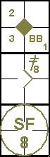 |
Example 13: The first batter hits a safe hit to third base, while the next batter sends him to third with a single to the right field. On an attempt to steal second, the catcher throws to the second baseman but fails to make the putout. The runner on third base takes this opportunity to advance to home base and score. Both runners are awarded stolen bases and the run is earned.
| WBSC | Translation in the scoring tool | Tool |
|---|---|---|
|
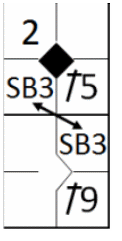 |
/* The first batter hits to third base. */ action { batter -> 1B5 } /* The next batter hits the ball to right field, and the runner advances two bases. */ action { batter -> 1B9 , runner1 -> ++ } /* Both runners steal a base. */ action { runner1 -> SB , runner3 -> SB earned } |

|
Example 14:
With less than two out, the first batter walks.
The next batter hits a double to the center fielder, forcing the runner to third base.
The third batter advances to first base after being touched by the pitched ball.
The next batter hits to the shortstop who throws to home base in an attempt to put out the runner
about to score.
The runner, however, reaches the base before the ball does, and scores. The fielder's choice is not a
fielding chance.
Everyone else advances one base.
The run is an earned run.
| WBSC | Translation in the scoring tool | Tool |
|---|---|---|
|
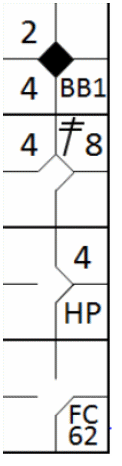 |
/* The first batter reaches first base on a base on balls. */ action { batter -> BB } /* The second batter hits a double to center field; the runner advances two bases. */ action { batter -> 2B8 , runner1 -> ++ } /* The next batter reaches first base after being hit by a pitch. */ action { batter -> HP } /* The next batter hits a ball to the shortstop, who faces a defensive choice. */ action { batter -> FC62 , runner1 -> + , runner2 -> + , runner3 -> + earned } |

|
Example 15:
The first batter walks.
The next two batters hit singles inside the diamond, filling the bases.
The fourth batter is awarded a base on balls, forcing all the other runners to advance one base, and
enabling the runner on third to score.
This is an earned run.
| WBSC | Translation in the scoring tool | Tool |
|---|---|---|
|
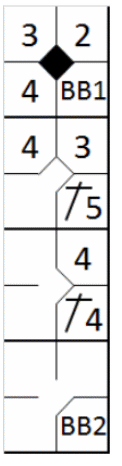 |
/* The first batter reaches first base on a base on balls. */ action { batter -> BB } /* The next batter hits a single to third base. */ action { batter -> 1B5 , runner1 -> + } /* The next batter hits a single to second base. */ action { batter -> 1B4 , runner1 -> + , runner2 -> + } /* The next batter reaches first base on a base on balls. */ action { batter -> BB , runner1 -> + , runner2 -> + , runner3 -> + earned } |
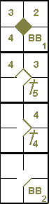 |
Example 16:
The first batter reaches first base on a throwing error by the third baseman.
The second batter hits a double to the right field, and the runner from first base runs home.
The next batter is struck out, and the fourth batter hits a single to the right field, sending home the
runner from second base.
The next two batters are put out.
The first run cannot be earned because the batter reached first base on an error.
The second run is earned, as it was obtained with just two fielding chances.
| WBSC | Translation in the scoring tool | Tool |
|---|---|---|
|
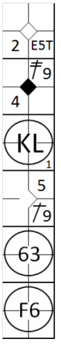 |
/* The first batter hits the ball to the third baseman, who commits an error
while making the throw. */ action { batter -> E5T } /* The next batter hits a double to right field, and the runner scores. */ action { batter -> 2B9 , runner1 -> +++ } /* The next batter strikes out. */ action { batter -> KS } /* The next batter hits a single to right field, and the runner on second scores. */ action { batter -> 1B9 , runner2 -> ++ earned } /* The next batter hits a ball to the shortstop, who relays it to first base to put him out. */ action { batter -> 63 , runner1 -> + } /* The next batter is retired on a fly ball to the shortstop. */ action { batter -> F6 } |
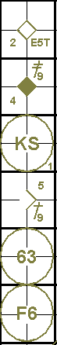 |
Example 17:
The first batter reaches first base with a safe hit to the left field, and is driven to second by the
next batter, who is awarded a base on balls.
The third batter hits a sacrifice bunt enabling both runners to advance one base.
With the fourth batsman at the plate, the pitcher delivers a balk, which means both runners advance one
base and a run is scored.
The batter is then awarded a base on balls.
The next batter receives a wild pitch that enables both runners to advance one base, and another run is
scored.
Both runs are earned runs.
| WBSC | Translation in the scoring tool | Tool |
|---|---|---|
|
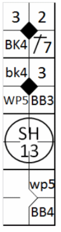 |
/* The first batter hits a single to left field. */ action { batter -> 1B7 } /* The next batter reaches base on a base on ball. */ action { batter -> BB , runner1 -> + } /* The next batter hits a sacrifice; both runners advance. */ action { batter -> SH13 , runner1 -> + , runner2 -> + } /* The two runners are advancing on a balk. */ action { runner2 -> bk , runner3 -> BK earned } /* The batter advances on a base on ball. */ action { batter -> BB } /* The two runners advance on a wild pitch. */ action { runner1 -> wp , runner3 -> WP earned } |
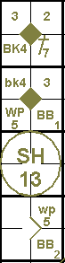 |
Example 18:
The first batter hits a high ball into foul territory, which the catcher should be able to catch but
does not. The scorer decides it is an easy catch and assigns an error to the catcher. The batter returns to
bat and hits a home run to the center field. The next batter is struck out, and the third hits a triple to
the right field.
At this point, with the fourth batter at the plate, the pitcher delivers a wild pitch, allowing the
runner on third to score the second run. The batter is subsequently struck out.
The fifth batter hits a triple to the center field and goes on to score the third run thanks to a balk
by the pitcher.
The first run scored on the home run hit cannot be earned as the batter’s life had been prolonged by an
error.
The second run was earned as it had been obtained with just two fielding chances.
The third run, however, was not earned, as it was scored after the third fielding chance.
| WBSC | Translation in the scoring tool | Tool |
|---|---|---|
|
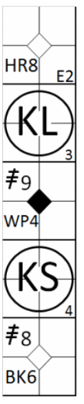 |
/* The batter should have been out on a foul fly ball. */ action { batter -> EF2 } /* Then he hits a home run to center field. */ action { batter -> HR8 } /* The next batter strikes out. */ action { batter -> KL } /* The next batter hits a triple to right field. */ action { batter -> 3B9 } /* He scores on a wild pitch. */ action { runner3 -> WP earned } /* The next batter strikes out. */ action { batter -> KS } /* The next batter hits a triple to enter field. */ action { batter -> 3B8 } /* He scores on a balk. */ action { runner3 -> BK } |

|
Example 19:
The first batter walks.
The next batter hits towards the shortstop, who throws to second in time to put out the runner, but
muffs the throw.
With first and second bases occupied, the catcher lets through a pitch he should have caught, allowing
both runners to advance.
The third batter hits a fly ball to the center field, enabling the runner from third to score.
The fourth batter hits a single to the center field, thus sending the runner from second home.
The fifth batter is struck out, and the sixth hits a home run to the right field, enabling a further two
runs to be scored.
None of these four runs is earned.
The first run cannot be earned because the runner reached second on an error.
The second run was obtained with just two fielding chances, but it must be remembered that the runner
reached second on a passed ball, without which the fourth batter's hit would have enabled him to reach third at
most, and which would have been the third fielding chance. The other two runs were scored after three fielding
chances.
| WBSC | Translation in the scoring tool | Tool |
|---|---|---|
|
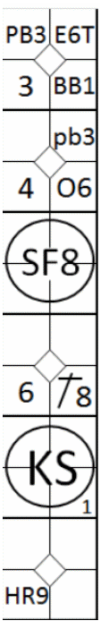 |
/* The first batter reaches base on a base on ball. */ action { batter -> BB } /* The next batter hits the ball and reaches base on a fielder's choice and a defensive error. */ action { batter -> O6 , runner1 -> E6T } /* Both runners advance on a pass ball. */ action { runner1 -> O6 , runner2 -> E6T } /* The next batter hits a sacrifice; the runner on third base scores. */ action { batter -> SF8 , runner3 -> + } /* The next batter hits a double to center field, and the runner scores. */ action { batter -> 1B8 , runner2 -> ++ } /* The next batter strikes out. */ action { batter -> KS } /* The next batter hits a home run, and the runner scores. */ action { batter -> HR9 , runner1 -> +++ } |
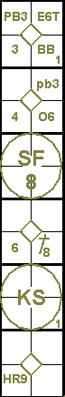 |
Example 20:
The first batter hits a triple to center field.
The second batter reaches first base safely when the shortstop muffs a fly ball.
While the third batter is at bat the runner on first steals second base, and the other runner takes
advantage of the fact that the fielders are concentrating on his team-mate to score a run.
The third and fourth batters are struck out.
The fifth is put out at first base with an assist by the shortstop.
The only run scored was not earned, because if it had not been for the shortstop’s error the second
batter would have been put out and consequently he would not have been able to steal second base, thus allowing
the runner on third to score.
Indeed, this latter runner would have remained on third base, given that the actions of the following
batters would not have provided him with any subsequent opportunities to advance.
| WBSC | Translation in the scoring tool | Tool |
|---|---|---|

|
/* The first batter hits a triple to right field. */ action { batter -> 3B9 } /* The next batter reaches base on an error by the shortstop. */ action { batter -> E6F } /* Both runners steal a base. */ action { runner1 -> SB , runner3 -> SB } /* The next batter strikes out. */ action { batter -> KL } /* The next batter strikes out. */ action { batter -> KL } /* The next batter is retired on a ground ball. */ action { batter -> 63 } |
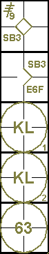 |
In the case of catcher’s interference to the batterrunner (before he reaches first base), it is a
decisive error that for the rules [OBR 9.16(a) comment] is not considered a fielding chance, and for this
reason any runs scored by this batter-runner cannot become earned.
Example 21:
with two out the third batter reaches first on a catcher’s interference.
The fourth batter hits a home run.
The fifth batter strikes out.
Two runs have scored, but one (the run of the fourth batter) is earned, because the official scorer
cannot assume that the third batter would have made an out to end the inning, absent the catcher’s
interference.
| WBSC | Translation in the scoring tool | Tool |
|---|---|---|
|
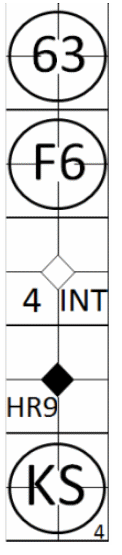 |
/* The batter is put out on a ground ball. */ action { batter -> 63 } /* The batter is put out on a fly. */ action { batter -> F6 } /* The batter reaches base on catcher's interference. */ action { batter -> INT } /* The batter hits a home run to right field, the runner advances and scores */ action { batter -> HR9 earned , runner1 -> +++ } /* The next batter strikes out. */ action { batter -> KS } |

|
Example 22:
the first two batters are struck out.
The third batter reaches first base on a safe hit to third base.
The fourth batter reaches first base on a safe hit to left field, allowing the runner to advance to
second base
The catcher interferes with the fifth batter and forces the other two to advance.
The sixth advances to first base after being touched by the pitched ball; all runners advance and the
third of the batting order scores a run.
This run is considered a run batted in, but not an earned run, as the official scorer shall not assume
that the batter who reached first base by catcher’s interference would have made an out.
Because such batter never had a chance to complete his time at bat, it is unknown
how such batter would have fared absent the catcher’s interference
[OBR 9.16(a) Comment].
| WBSC | Translation in the scoring tool | Tool |
|---|---|---|

|
/* The next batter strikes out. */ action { batter -> KL } /* The next batter strikes out. */ action { batter -> KL } /* The batter hits a single to third base. */ action { batter -> 1B5 } /* The batter hits a single to left field. */ action { batter -> 1B7 , runner1 -> + } /* The batter reaches first base on catcher's interference. */ action { batter -> INT , runner1 -> + , runner2 -> + } /* The batter reaches first base after being hit by a pitch. */ action { batter -> HP , runner1 -> + , runner2 -> + , runner3 -> + } |

|
Example 23:
continues with the situation mentioned in example 22. Now the seventh batter reaches first base on a
safe hit to right field which makes all runners to advance one base.
Now the run of the third batter becomes earned; the run of the fourth batter is not earned yet.
| WBSC | Translation in the scoring tool | Tool |
|---|---|---|
|
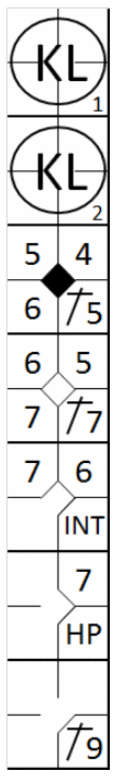 |
/* The next batter strikes out. */ action { batter -> KL } /* The next batter strikes out. */ action { batter -> KL } /* The batter hits a single to third base. */ action { batter -> 1B5 } /* The batter hits a single to left field. */ action { batter -> 1B7 , runner1 -> + } /* The batter reaches first base on catcher's interference. */ action { batter -> INT , runner1 -> + , runner2 -> + } /* The batter reaches first base after being hit by a pitch. */ action { batter -> HP , runner1 -> + , runner2 -> + , runner3 -> + earned } /* The batter hits a single to right field. */ action { batter -> 1B9 , runner1 -> + , runner2 -> + , runner3 -> + } |
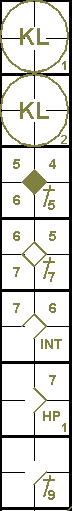 |
Example 24:
continues with the situation of example 23. The next batter hits a home run, allowing all other runners
to score.
Now all runs become earned runs, except for the run of the fifth batter who reached first base through
the catcher’s interference. This batter never had a chance to complete his time at bat and it is unknown how
such batter would have fared absent the catcher’s interference.
| WBSC | Translation in the scoring tool | Tool |
|---|---|---|

|
/* The next batter strikes out. */ action { batter -> KL } /* The next batter strikes out. */ action { batter -> KL } /* The batter hits a single to third base. */ action { batter -> 1B5 } /* The batter hits a single to left field. */ action { batter -> 1B7 , runner1 -> + } /* The batter reaches first base on catcher's interference. */ action { batter -> INT , runner1 -> + , runner2 -> + } /* The batter reaches first base after being hit by a pitch. */ action { batter -> HP , runner1 -> + , runner2 -> + , runner3 -> + earned } /* The batter hits a single to right field. */ action { batter -> 1B9 , runner1 -> + , runner2 -> + , runner3 -> + } /* The batter hits a single to right field. */ action { batter -> HR9 , runner1 -> +++ earned , runner2 -> ++ earned , runner3 -> + earned } |

|